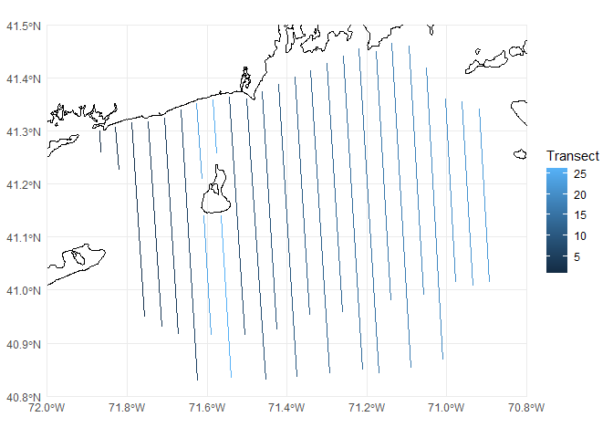
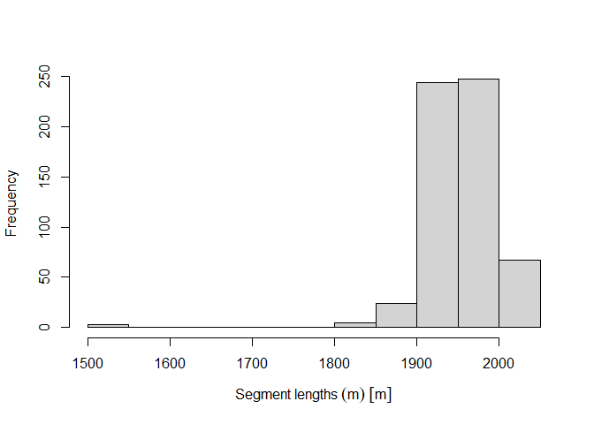
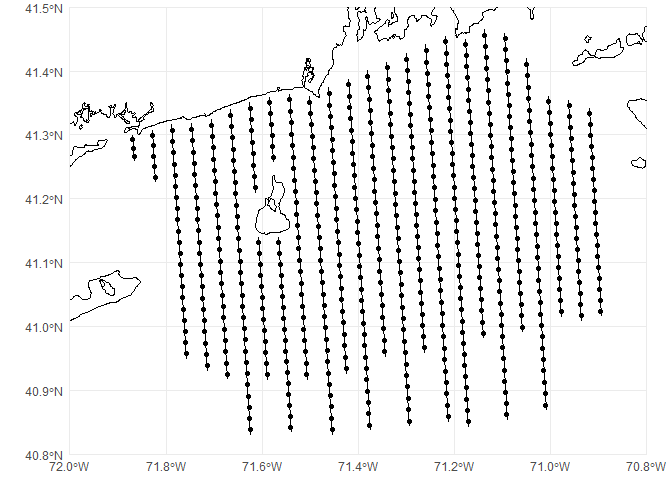
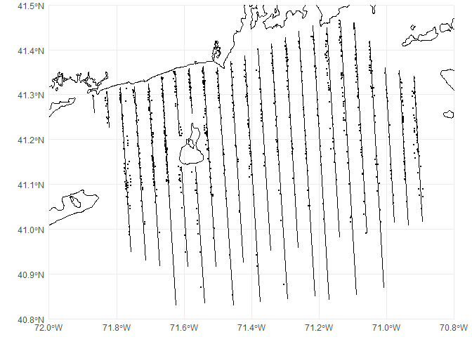
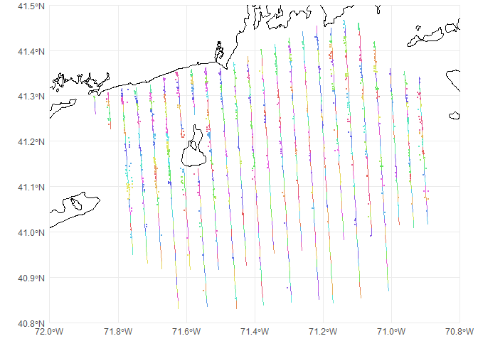

`dsm` data formatting example
David L Miller
CREEM, University of St AndrewsAugust 2025
Source:vignettes/data_format/dsm-data-formatting.Rmd
dsm-data-formatting.RmdIntroduction
The dsm package expects data to be in a specific format. In this example I’ll show how to get data into that format and give some explanation as to why each of these requirements exist.
I recommend getting to grips with fitting models in dsm before reading this tutorial so you know what the end point will look like before trying to grapple with the data. An example for Gulf of Mexico pantropical spotted dolphins is available here.
Prerequisites
To run the code below, you will need to have the ggplot2 and sf libraries installed. You can do this with the following code:
install.packages(c("ggplot2", "sf"))The Rhode Island data required downloaded below:
- loon observations
- coastline dbf
- coastline projection
- coastline shapefile
- coastline shx
- transects dbf
- transects projection
- transects shapefile
- transects shx
These should be placed in a folder called data for the code below to work.
Overview
When we collect distance sampling data, we need to record (1) the distance to an observation (along with other detectability covariates like weather), (2) the transect we are currently on, and (3) how much effort we expended on that transect (its length or number of visits).
If we want to fit a DSM that information needs to be expanded to include where on the transect we are too, so we can build the spatial model. For point transects, this is simple as we are always at the point, but for line transects we need to know the position of the detection too (or equivalently, how far along the transect we are).
More abstractly, we need information about both detections and effort. We also need to link these two. In dsm we use three objects to hold this information:
- the fitted detection function (argument
ddf.obj) holds all the detections but ignores spatial information - the “segments” (argument
segment.data) holds the chunks of effort (parts of the transect or point visits) and their locations. It might also include environmental covariate information. - a table linking the above two (argument
observation.data), making sure each detection has a corresponding segment.
dsm tablesThe above image gives an overview of how the different data.frames interact, along with how that corresponds to the real life situation of collecting data on a transect.
The rest of this example goes through each table in turn, explaining their construction.
Table construction
Detection data
The data requirements are very similar to those for packages mrds and Distance. In both cases, each detection has a corresponding row. For an analysis using dsm we have additional requirements in the data (which can be auto-generated by Distance but we recommend against this to ensure that you know that records link up correctly).
For Distance we need:
-
distance: the distance to the detection -
object: a unique detection identifier (which will link to the observation table) -
size: the number of individuals in the detection (1 if objects occur alone)
mrds requires the following extra columns (to allow for double observer surveys):
-
detected: 1 if detected by the observer and 0 if missed (always 1 for single observer) -
observer: observer number (1 or 2) (always 1 for single observer)
If other covariates that affect detectability are recorded (e.g., sex or weather) then these can be included in this data for analysis in mrds or Distance.
Once the model is fitted, we deal only with that fitted model object in the dsm analysis.
Segment data
I will use the term “segment” here to refer to both points for point transects and small chunks of transect for the line transect case. I’ll assume that you’ve already segmented your lines while first describing the data format, then go on to an example of how to segment line transect data.
The data.frame required for the segments needs the following columns:
-
Effort: the effort expended on this segment (either the length of the segment for lines, or the number of visits for points) -
Sample.Label: a unique identifier for the segment (if you are engaged in a complicated survey, this might take a format like “YEAR-AREA-LINE-SEGMENT”, so you have labels like “2020-North-A-15”, which can be useful to keep track of where data came from later).
In addition, environmental covariates like location and relevant covariates (sea surface temperature, foliage type, altitude, bathymetry, etc) can be included in this data.frame if they are to be used in the spatial model.
Segmenting
If you have data as lines and you want to chop them up into segments, this section will give some sample R code to do this. How things work is extremely dependent on the input data, but hopefully this gives a template for what you want to do at least.
Before you jump in: If you are fluent in ArcGIS or QGIS I recommend doing this task in the software you are familiar with at first. A simple guide to doing this task in QGIS is here and for ArcGIS I recommend the MGET toolbox.
As an example, we will look at an aerial survey of seabirds off the coast of Rhode Island, USA. Data from these surveys were collected by the University of Rhode Island and analysed in K. Winiarski, Miller, Paton, & McWilliams (2013), K. J. Winiarski, Burt, et al. (2014) and K. J. Winiarski, Miller, Paton, & McWilliams (2014). I have the transects saved as a shapefile that I will then “chop-up” into segments. To start with let’s plot the data with the coastline:
library(ggplot2)
library(sf)
# coast data, just for reference
coastline <- read_sf("data/ri_coast.shp")
# our transect lines
transects <- read_sf("data/ri_transects.shp")
# now make the plot
p <- ggplot() +
# geom_sf knows what to do with spatial data
geom_sf(data=coastline) +
geom_sf(data=transects, aes(colour=Transect)) +
# chop to be on a better scale
coord_sf(xlim=c(-72, -70.8), ylim=c(40.8, 41.5), expand=FALSE) +
# make the plot look simpler
theme_minimal()
print(p)
In the above code we have loaded the sf package. This is the package we will use to do most of our spatial work in segmenting the data. It has most of the tools expected from a GIS, though the package is still being developed so its functionality is always increasing.
Investigating the transects data we loaded, we can see it consists of a data.frame with some extra bits (the spatial information, including locations (geometry) and projection (CRS)):
transects## Simple feature collection with 26 features and 1 field
## Geometry type: LINESTRING
## Dimension: XY
## Bounding box: xmin: -71.86948 ymin: 40.82944 xmax: -70.8944 ymax: 41.46521
## Geodetic CRS: WGS 84
## # A tibble: 26 × 2
## Transect geometry
## <dbl> <LINESTRING [°]>
## 1 1 (-71.86948 41.29969, -71.86581 41.25891)
## 2 2 (-71.82872 41.30738, -71.82145 41.2258)
## 3 3 (-71.78805 41.31562, -71.75676 40.94846)
## 4 4 (-71.74674 41.31728, -71.71394 40.92971)
## 5 5 (-71.70589 41.3241, -71.67156 40.91612)
## 6 6 (-71.66578 41.33943, -71.62329 40.82944)
## 7 7 (-71.5435 41.36397, -71.5064 40.91516)
## 8 8 (-71.5015 41.35994, -71.45266 40.82978)
## 9 9 (-71.46131 41.37378, -71.42458 40.92496)
## 10 10 (-71.421 41.38723, -71.37562 40.83641)
## # ℹ 16 more rowsWe have one row per transect (for a total of 24 transects), each of which consists of a line joining the start and end points that make up the transects. If we want we can plot individual rows via plot(transects[1,]); this can be useful to check that each row is a single line, or if further processing is needed (this can be tricky and is not covered in this tutorial but see “More information” below).
This data looks in good shape, so we can use the st_segmentize function to take each transect and make segments from them. To make sure everything works correctly, we need to project the data first. Here I’m using an appropriate projected coordinate system (EPSG code 6348), which is the Rhode Island State Plane.
# project transects
transects <- st_transform(transects, 6348)
# do the segmenting
segs <- st_segmentize(transects, dfMaxLength=units::set_units(2000, "metres"))
# transform back to lat/long
segs <- st_transform(segs, 4326)
transects <- st_transform(transects, 4326)Here we know the truncation used for the detection function was 1000m (the distances were collected in bins and this was the further bin), and since we’re trying to make our segments approximately square, we set the length to be twice that (since the truncation applies to either side of the transect), so 2000m.
Looking at what that did:
segs## Simple feature collection with 26 features and 1 field
## Geometry type: LINESTRING
## Dimension: XY
## Bounding box: xmin: -71.86948 ymin: 40.82944 xmax: -70.8944 ymax: 41.46521
## Geodetic CRS: WGS 84
## # A tibble: 26 × 2
## Transect geometry
## * <dbl> <LINESTRING [°]>
## 1 1 (-71.86948 41.29969, -71.86826 41.2861, -71.86703 41.2725, -71.8658…
## 2 2 (-71.82872 41.30738, -71.82727 41.29106, -71.82581 41.27475, -71.82…
## 3 3 (-71.78805 41.31562, -71.78654 41.29813, -71.78505 41.28065, -71.78…
## 4 4 (-71.74674 41.31728, -71.74524 41.29967, -71.74373 41.28205, -71.74…
## 5 5 (-71.70589 41.3241, -71.70438 41.30636, -71.70288 41.28863, -71.701…
## 6 6 (-71.66578 41.33943, -71.6643 41.32185, -71.66283 41.30426, -71.661…
## 7 7 (-71.5435 41.36397, -71.542 41.34602, -71.54051 41.32807, -71.53901…
## 8 8 (-71.5015 41.35994, -71.49986 41.34227, -71.49821 41.3246, -71.4965…
## 9 9 (-71.46131 41.37378, -71.45983 41.35583, -71.45835 41.33788, -71.45…
## 10 10 (-71.421 41.38723, -71.41952 41.36946, -71.41804 41.3517, -71.41656…
## # ℹ 16 more rowsSee now that each row has many coordinates attached to it, just looking at the first row (transect 1) and comparing the coordinates between transects and segs
st_coordinates(transects[1,])## X Y L1
## [1,] -71.86948 41.29969 1
## [2,] -71.86581 41.25891 1transects has just two coordinates in it (the start and end points of the line). Whereas:
st_coordinates(segs[1,])## X Y L1
## [1,] -71.86948 41.29969 1
## [2,] -71.86826 41.28610 1
## [3,] -71.86703 41.27250 1
## [4,] -71.86581 41.25891 1segs has 5, corresponding to our segment cut points.
We now need to break up the rows of segs into multiple rows, one per segment. This is a bit fiddly. We use a function provided by dieghernan on their site to do this. We first load the function (don’t worry about understanding the code!):
stdh_cast_substring <- function(x, to = "MULTILINESTRING") {
ggg <- st_geometry(x)
if (!unique(st_geometry_type(ggg)) %in% c("POLYGON", "LINESTRING")) {
stop("Input should be LINESTRING or POLYGON")
}
for (k in 1:length(st_geometry(ggg))) {
sub <- ggg[k]
geom <- lapply(
1:(length(st_coordinates(sub)[, 1]) - 1),
function(i)
rbind(
as.numeric(st_coordinates(sub)[i, 1:2]),
as.numeric(st_coordinates(sub)[i + 1, 1:2])
)
) %>%
st_multilinestring() %>%
st_sfc()
if (k == 1) {
endgeom <- geom
}
else {
endgeom <- rbind(endgeom, geom)
}
}
endgeom <- endgeom %>% st_sfc(crs = st_crs(x))
if (class(x)[1] == "sf") {
endgeom <- st_set_geometry(x, endgeom)
}
if (to == "LINESTRING") {
endgeom <- endgeom %>% st_cast("LINESTRING")
}
return(endgeom)
}We can then use it to separate the segments and look at the results:
segs <- stdh_cast_substring(segs, to="LINESTRING")## Warning in st_cast.sf(., "LINESTRING"): repeating attributes for all
## sub-geometries for which they may not be constant
segs## Simple feature collection with 590 features and 1 field
## Geometry type: LINESTRING
## Dimension: XY
## Bounding box: xmin: -71.86948 ymin: 40.82944 xmax: -70.8944 ymax: 41.46521
## Geodetic CRS: WGS 84
## # A tibble: 590 × 2
## Transect geometry
## <dbl> <LINESTRING [°]>
## 1 1 (-71.86948 41.29969, -71.86826 41.2861)
## 2 1 (-71.86826 41.2861, -71.86703 41.2725)
## 3 1 (-71.86703 41.2725, -71.86581 41.25891)
## 4 2 (-71.82872 41.30738, -71.82727 41.29106)
## 5 2 (-71.82727 41.29106, -71.82581 41.27475)
## 6 2 (-71.82581 41.27475, -71.82436 41.25843)
## 7 2 (-71.82436 41.25843, -71.8229 41.24212)
## 8 2 (-71.8229 41.24212, -71.82145 41.2258)
## 9 3 (-71.78805 41.31562, -71.78654 41.29813)
## 10 3 (-71.78654 41.29813, -71.78505 41.28065)
## # ℹ 580 more rowsWe now have 590 segments between 1km and 2km long. We can check the lengths using the st_length function and plot a histogram of the segment lengths:

Note that in setting the dfMaxLength argument to st_segmentize we are giving a rough guide to the segment length and the algorithm inside st_segmentize tries to get segments to be as equal in length as possible (note the \(x\) axis in the histogram).
Note also that the Transect column in segs now has duplicate entries as each transect has multiple segments in it. We can now create our required columns for dsm.
First, the Effort column can be generated using st_length:
segs$Effort <- st_length(segs)Then we can generate the Sample.Labels. Here I’ll use a more complicated naming scheme to show how that’s done, but one could simply write segs$Sample.Label <- 1:nrow(segs) and that would be sufficient. Instead, I would like to have my Sample.Label be the “YEAR-AREA-LINE-SEGMENT” scheme I suggested above.
There are fancier ways to do this, but for clarity, let’s use a for loop:
# create a dummy column that we can fill in as we go
segs$Sample.Label <- NA
# set the year and area once for this data
year <- 2010
area <- "RI"
# loop over the transect IDs
for(this_transect in unique(segs$Transect)){
# how many segments in this transect?
n_segs <- nrow(subset(segs, Transect==this_transect))
# generate the n_segs labels that we need
segs$Sample.Label[segs$Transect==this_transect] <- paste(year, area, this_transect,
1:n_segs, sep="-")
}Now we can check that looks right:
segs## Simple feature collection with 590 features and 3 fields
## Geometry type: LINESTRING
## Dimension: XY
## Bounding box: xmin: -71.86948 ymin: 40.82944 xmax: -70.8944 ymax: 41.46521
## Geodetic CRS: WGS 84
## # A tibble: 590 × 4
## Transect geometry Effort Sample.Label
## * <dbl> <LINESTRING [°]> [m] <chr>
## 1 1 (-71.86948 41.29969, -71.86826 41.2861) 1515. 2010-RI-1-1
## 2 1 (-71.86826 41.2861, -71.86703 41.2725) 1515. 2010-RI-1-2
## 3 1 (-71.86703 41.2725, -71.86581 41.25891) 1515. 2010-RI-1-3
## 4 2 (-71.82872 41.30738, -71.82727 41.29106) 1818. 2010-RI-2-1
## 5 2 (-71.82727 41.29106, -71.82581 41.27475) 1818. 2010-RI-2-2
## 6 2 (-71.82581 41.27475, -71.82436 41.25843) 1818. 2010-RI-2-3
## 7 2 (-71.82436 41.25843, -71.8229 41.24212) 1818. 2010-RI-2-4
## 8 2 (-71.8229 41.24212, -71.82145 41.2258) 1818. 2010-RI-2-5
## 9 3 (-71.78805 41.31562, -71.78654 41.29813) 1948. 2010-RI-3-1
## 10 3 (-71.78654 41.29813, -71.78505 41.28065) 1948. 2010-RI-3-2
## # ℹ 580 more rowsWith the required columns taken care of, we can also calculate the centroids of our segments to get the locations of each segment to use in the spatial model. Handily we can use st_centroid to do this in one step and keep all our data at the same time.
We get a warning about how centroids might not be calculated correctly when latitude/longitude are used. So again we need to project the data first (to Rhode Island State Plane) for this step using st_transform.
# save the line version of segs for plotting later
segs_lines <- segs
# project segs
segs <- st_transform(segs, 6348)
# find centroids
segs <- st_centroid(segs)## Warning: st_centroid assumes attributes are constant over geometries
# project back to lat/long
segs <- st_transform(segs, 4326)
# how does that look?
segs## Simple feature collection with 590 features and 3 fields
## Geometry type: POINT
## Dimension: XY
## Bounding box: xmin: -71.86887 ymin: 40.83823 xmax: -70.89506 ymax: 41.45646
## Geodetic CRS: WGS 84
## # A tibble: 590 × 4
## Transect geometry Effort Sample.Label
## * <dbl> <POINT [°]> [m] <chr>
## 1 1 (-71.86887 41.29289) 1515. 2010-RI-1-1
## 2 1 (-71.86764 41.2793) 1515. 2010-RI-1-2
## 3 1 (-71.86642 41.2657) 1515. 2010-RI-1-3
## 4 2 (-71.82799 41.29922) 1818. 2010-RI-2-1
## 5 2 (-71.82654 41.2829) 1818. 2010-RI-2-2
## 6 2 (-71.82508 41.26659) 1818. 2010-RI-2-3
## 7 2 (-71.82363 41.25028) 1818. 2010-RI-2-4
## 8 2 (-71.82218 41.23396) 1818. 2010-RI-2-5
## 9 3 (-71.78729 41.30687) 1948. 2010-RI-3-1
## 10 3 (-71.7858 41.28939) 1948. 2010-RI-3-2
## # ℹ 580 more rowsNotice that our geometry type is now POINT. We can plot these centroids on our previous map:
p <- ggplot() +
# geom_sf knows what to do with spatial data
geom_sf(data=coastline) +
geom_sf(data=transects) +
geom_sf(data=segs) +
# chop to be on a better scale
coord_sf(xlim=c(-72, -70.8), ylim=c(40.8, 41.5), expand=FALSE) +
# make the plot look simpler
theme_minimal()
print(p)
At present, the dsm package doesn’t know how to talk to sf objects, so as a final step we need to simplify segs to be a regular data.frame, which dsm can interpret. We can extract the coordinates of the centroids using st_coordinates and then append them onto a data.frame version of the object with the geometry dropped, like so:
segs_df <- cbind(as.data.frame(st_drop_geometry(segs)),
st_coordinates(segs))We can double check that looks right:
head(segs_df)## Transect Effort Sample.Label X Y
## 1 1 1515.147 [m] 2010-RI-1-1 -71.86887 41.29289
## 2 1 1515.151 [m] 2010-RI-1-2 -71.86764 41.27930
## 3 1 1515.155 [m] 2010-RI-1-3 -71.86642 41.26570
## 4 2 1818.179 [m] 2010-RI-2-1 -71.82799 41.29922
## 5 2 1818.184 [m] 2010-RI-2-2 -71.82654 41.28290
## 6 2 1818.190 [m] 2010-RI-2-3 -71.82508 41.26659and we are done. See the next section for how to link the segments and the detections.
If we want to include spatial covariate information in the segment table, we could then use (for example) rerrdap to obtain remotely-sensed data. For in situ data (i.e., weather conditions recorded while on effort), this can be more complicated and will require the use of summarize, see this thread for more information on how to deal with this situation.
Linking observations and segments
To link together the data in the detection function and the spatial data giving the effort, we use the observation data.frame. This is really just a cross-reference between those two tables, so each detection lives in one segment.
The observation data.frame must have (at least) the following columns:
-
object: unique object identifier (corresponding to those identifiers in the detection function) -
Sample.Label: the identifier for the segment that the observation occurred in -
size: the size of each observed group (e.g., 1 if all animals occurred individually) -
distance: distance to observation
The observation data should have as many rows as there are in the detection function.
Relating observations and segments in practice
There are a few methods for building the observation table. Here I’ll illustrate one assigning detections to segments based on their distance (i.e., detections are associated with their closest segment centroid). This is appropriate when you don’t see forwards too far, so it’s unlikely that detections will be miss assigned. This is true, for instance, in an aerial survey where observers look out windows located on the sides of the plane but might be inappropriate for a shipboard survey where observers on the flying bridge can see way ahead of the ship.
First loading the detection data for this survey (this would be what we use to fit the detection function, post-processing):
## Date Time Bin Lat Long Observer object size
## 1 2011-04-19 18991230 B 40.85296 -71.45511 JV 46 1
## 2 2011-02-17 18991230 A 40.87022 -71.54842 JV 106 1
## 3 2011-05-02 18991230 A 40.87595 -71.30304 KW 121 1
## 4 2011-12-04 18991230 C 40.91753 -71.38273 KW 286 1
## 5 2011-02-23 18991230 A 40.94153 -71.38517 KW 446 1
## 6 2011-02-07 18991230 A 40.94225 -71.46438 KW 457 1We can see there are columns for latitude and longitude (Lat and Long). We can make this data.frame be an sf object by telling sf that these columns contain spatial coordinates (in sf lingo, “geometry”):
## Simple feature collection with 941 features and 6 fields
## Geometry type: POINT
## Dimension: XY
## Bounding box: xmin: -71.86962 ymin: 40.85296 xmax: -70.89175 ymax: 41.46472
## Geodetic CRS: WGS 84
## First 10 features:
## Date Time Bin Observer object size geometry
## 1 2011-04-19 18991230 B JV 46 1 POINT (-71.45511 40.85296)
## 2 2011-02-17 18991230 A JV 106 1 POINT (-71.54842 40.87022)
## 3 2011-05-02 18991230 A KW 121 1 POINT (-71.30304 40.87595)
## 4 2011-12-04 18991230 C KW 286 1 POINT (-71.38273 40.91753)
## 5 2011-02-23 18991230 A KW 446 1 POINT (-71.38517 40.94153)
## 6 2011-02-07 18991230 A KW 457 1 POINT (-71.46438 40.94225)
## 7 2011-04-19 18991230 A JV 500 2 POINT (-71.59495 40.94761)
## 8 2011-05-02 18991230 A KW 506 1 POINT (-71.552 40.94795)
## 9 2011-02-23 18991230 B JV 814 1 POINT (-71.51172 40.97912)
## 10 2011-04-19 18991230 A KW 911 1 POINT (-71.59762 40.98571)We can overlay this on our previous map of transects:
p <- ggplot() +
# geom_sf knows what to do with spatial data
geom_sf(data=coastline) +
geom_sf(data=transects) +
geom_sf(data=obs, size=0.5) +
# chop to be on a better scale
coord_sf(xlim=c(-72, -70.8), ylim=c(40.8, 41.5), expand=FALSE) +
# make the plot look simpler
theme_minimal()
print(p)
Going back to our segs object above, we can use the st_join function, combined with the st_nearest_feature function to control how the tables are linked. Again, we need to project the data to avoid issues.
# project segs
segs <- st_transform(segs, 6348)
obs <- st_transform(obs, 6348)
# do the join
obs <- st_join(obs, segs, join=st_nearest_feature)
# project back to lat/long
segs <- st_transform(segs, 4326)
obs <- st_transform(obs, 4326)
# how does that look?
obs## Simple feature collection with 941 features and 9 fields
## Geometry type: POINT
## Dimension: XY
## Bounding box: xmin: -71.86962 ymin: 40.85296 xmax: -70.89175 ymax: 41.46472
## Geodetic CRS: WGS 84
## First 10 features:
## Date Time Bin Observer object size Transect Effort
## 1 2011-04-19 18991230 B JV 46 1 8 1969.873 [m]
## 2 2011-02-17 18991230 A JV 106 1 26 1894.100 [m]
## 3 2011-05-02 18991230 A KW 121 1 12 1988.809 [m]
## 4 2011-12-04 18991230 C KW 286 1 10 1979.630 [m]
## 5 2011-02-23 18991230 A KW 446 1 10 1979.624 [m]
## 6 2011-02-07 18991230 A KW 457 1 8 1969.839 [m]
## 7 2011-04-19 18991230 A JV 500 2 24 1923.218 [m]
## 8 2011-05-02 18991230 A KW 506 1 26 1894.075 [m]
## 9 2011-02-23 18991230 B JV 814 1 7 2000.139 [m]
## 10 2011-04-19 18991230 A KW 911 1 24 1923.199 [m]
## Sample.Label geometry
## 1 2010-RI-8-29 POINT (-71.45511 40.85296)
## 2 2010-RI-26-16 POINT (-71.54842 40.87022)
## 3 2010-RI-12-31 POINT (-71.30304 40.87595)
## 4 2010-RI-10-27 POINT (-71.38273 40.91753)
## 5 2010-RI-10-26 POINT (-71.38517 40.94153)
## 6 2010-RI-8-24 POINT (-71.46438 40.94225)
## 7 2010-RI-24-12 POINT (-71.59495 40.94761)
## 8 2010-RI-26-12 POINT (-71.552 40.94795)
## 9 2010-RI-7-22 POINT (-71.51172 40.97912)
## 10 2010-RI-24-9 POINT (-71.59762 40.98571)Now obs has acquired additional columns from segs, including the Sample.Label (which we want) and Effort (which we don’t). To check this worked okay, we can plot the obs and segs_lines (the line version of the segments which we saved earlier) with colour coding for the Sample.Label. I randomized the colour order so it would be easier to tell if observations were misallocated.
# make a random colour palette to avoid similar colours being near each other
pal <- rainbow(nrow(segs), s=.6, v=.9)[sample(1:nrow(segs),nrow(segs))]
p <- ggplot() +
# geom_sf knows what to do with spatial data
geom_sf(data=coastline) +
geom_sf(data=segs_lines, aes(colour=Sample.Label), pch=21) +
geom_sf(data=obs, size=0.5, aes(colour=Sample.Label)) +
# chop to be on a better scale
coord_sf(xlim=c(-72, -70.8), ylim=c(40.8, 41.5), expand=FALSE) +
scale_colour_manual(values=pal) +
# make the plot look simpler
theme_minimal() +
theme(legend.position = "none")
print(p)
As with segs we can remove unnecessary columns and geometry to get the required columns only:
# get rid of "spatialness"
obs <- st_drop_geometry(obs)
# select the columns we need
obs <- obs[, c("object", "Sample.Label", "size", "Bin")]
head(obs)## object Sample.Label size Bin
## 1 46 2010-RI-8-29 1 B
## 2 106 2010-RI-26-16 1 A
## 3 121 2010-RI-12-31 1 A
## 4 286 2010-RI-10-27 1 C
## 5 446 2010-RI-10-26 1 A
## 6 457 2010-RI-8-24 1 A(Note here since we have binned data, we just keep the Bin column and need to process this further later.)
A different way to approach this would be if there were timestamps on waypoints from the GPS, which could be related to the segments. One could then look at whether an observation was made between the start and end times of a segment.
More information
We have provided some information about segmenting on this wiki page, as part of the US Navy-funded project DenMod.
This information is summarized at ?"dsm-data" in the dsm package. It may also be useful to look at the data in the example dataset mexdolphins which can be loaded with data(mexdolphins). The vignette for an analysis of those data is available here.
It is hard to give very general information on how to segment lines, as to some extent it depends on how the data were originally formatted (going all the way back to the make and model of the GPS unit used). More information on dealing with spatial data in R using the sf package is available at the R spatial website (see the “Articles” drop down in the header).
Another source of help is the distance sampling mailing list. Be sure to search the archives prior to posting as there have been several threads on segmenting previously that might be helpful.
Acknowledgements
Thanks to Phil Bouchet for providing helpful comments to an early version of this document and to Iúri Correia for finding an important bug.